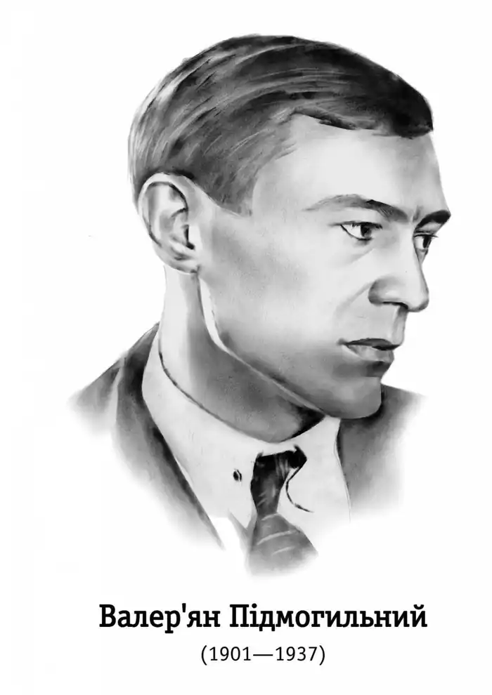
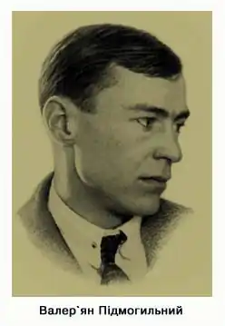
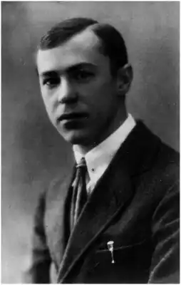

Валеріан Підмогильний (1901-1937)
Валеріан Петрович Підмогильний народився 2 лютого 1901 року в селі Чаплях на Катеринославщині (тепер — Дніпропетровська обл.) в селянській родині. Батько його, Петро Підмогильний, який завідував маєтком місцевого поміщика, помер дуже рано: "Так мало батьківських пестощів випало на мою долю". Односельчани також згадують лише про матір письменника — звичайну селянку, без освіти, яка працювала в економії графа Воронцова-Дашкова і "виділялася надзвичайною природною інтелігентністю".
Освіта В.Підмогильного почалася з відвідин церковно-приходської школи. З 1910-го по 1918 рік він навчається в Катеринославському реальному училищі. Про цей період життя Валеріана Петровича мешканка села Чаплі Ярушевська Г.Н. згадує так: "Валеріан був надзвичайно здібним хлопцем. Було, послухає уважно урок і вже вдома не повторює. А натомість набере в учителів і знайомих стоси книг і просиджує над ними цілу ніч. Він дружив з моїм братом Степаном. Був тихий, сором'язливий. Любив ходити на сінокіс, на рибалку до Дніпра. І вже тоді мій брат хвалився, що Валеріан пише вірші і оповідання". Перший відомий твір Валеріана Підмогильного був написаний 1917 року. 1919 року в катеринославському журналі "Січ" з'являються його "Гайдамаки" і "Ваня". Письменник захоплюється вивченням іноземних мов. Пізніше він настільки удосконалить свої знання, що стане одним з найталановитіших перекладачів зарубіжної літератури 20-30-х років. Того ж 1919 року Валеріан Петрович Підмогильний вступає на математичний факультет Катеринославського університету, але матеріальна скрута змушує його облишити навчання і йти працювати в школу. Вчителює спочатку в Катеринославі та Павлограді, потім у Ворзелі, неподалік Києва. 1920 року виходить збірка його оповідань "Твори" том 1, до якої ввійшли оповідання "Старець", "Ваня", "Важке питання", "Пророк", "Добрий бог", "Гайдамаки", "На селі", "На іменинах", "Дід Яким", написані в 1917-1919 роках, переважно під час навчання в реальному училищі. 1921 року письменник одружується з донькою ворзелівського священика Катрею Червінською. Тоді ж створює цикл "Повстанці". Частина оповідань Валеріана Підмогильного друкується в катеринославській газеті "Український пролетар", весь цикл вийшов лише за кордоном. Уже в цих оповіданнях письменник "став на варті страждання людини", таким чином протиставивши себе майже всій молодій прозі, що піддалася ейфорії революційного романтизму з його сподіванням витворити нового індивіда. Не дивно, що ортодоксальні, соціально заангажовані критики поставилися до молодого письменника досить стримано. 1922 року Валеріан разом з дружиною перебирається до Києва, де мешкає в будинку недалеко від Сінного базару, на розі Великої Житомирської. За свідченням сучасників письменника, двері цієї квартири ніколи не зачинялися. У Києві Підмогильний з головою поринає у вир тогочасного літературно-мистецького життя. Стає активним членом щойно створеного "Аспису" (Асоціації письменників). 1924 року ця організація трансформувалася в "Ланку", а з 1926 року носила назву "Марс" ("Майстерня революційного слова"), що стала, по суті, київською філією "Вапліте". "Ланка-Марс" об'єднувала багато талановитих київських літераторів, серед яких: Б. Антоненко-Давидович, М. Галчин, М. Івченко, Я. Качур, Г.Косинка, Т. Осьмачка, В. Підмогильний, Є. Плужник, Д. Тась (Могилянський), Б. Тенета, М. Терещенко, Д. Фальківський та інші. Як згадує Юрій Смолич "був Підмогильний якраз найдіяльніший і найенергійніший організатор згаданої "Ланки" (пізніше й "Марсу"), найвишуканіший авторитет поміж того кола письменників, яке ми, "гартовці", вважали сугубо попутницьким, навіть у якійсь частині право-попутницьким та не до кінця радянським". Валеріан Підмогильний працює також у редакції журналу "Життя й революція", який почав виходити з 1925 року. В період з 1921 по 1930 рік в часописах і колективних збірках друкуються його твори: "Собака", "В епідемічному бараці", "Військовий літун", "Історія пані Ївги", окремими виданнями — повість "Третя революція" (1924, 1925), оповідання "Син" (1925, 1930). 1924 року окремим виданням виходить збірка "Військовий літун". Усі вони ввійшли до найповнішої збірки письменника "Проблема хліба" (1927), яка перевидавалася й 1930 року. Більшість з цих оповідань присвячені приниженню людини перед "проблемою хліба" насущного, зокрема, це оповідання "Собака", "Проблема хліба", "В епідемічному бараці" (збірка "Військовий літун" 1924 р.), "Син". В новелах "Історія пані Ївги", "Військовий літун", "Сонце сходить" виведено постаті інтелігентів, чиї душі мучить провина за колись сите життя. Тогочасна критика, оцінюючи твори Валеріана Петровича Підмогильного, зазначала, що це "специфічно-інтелігентська література". При цьому під інтелігентом розуміли людину, якій властиві песимізм та скептицизм, яким не місце в пролетарському мистецтві. Варто зауважити, що примітивне, поверхове оспівування відданості народові й партії, догматичне слідування в письменстві ідеологічним принципам пануючої ідеології вважалося хорошим тоном справжньої "пролетарської" літератури; а будь-який ухил в бік символізму, психологічності образів героїв або поглибленого інтелектуального аналізу подій в художньому творі сприймалося як прояв "інтелігентщини", буржуазного націоналізму, або ж диверсії ворожого капіталістичного Заходу. Валеріан Підмогильний ще на початку літературної дискусії 1925-1928 років з тривогою зазначав, що справа не так у тезі Миколи Хвильового "Європа чи просвіта?", як у тому, що в літературі, як і в інших галузях життя, з'явився небезпечний тип "ура-комуніста", що продовжує "гопаківські традиції", орієнтуючись за будь-яких обставин винятково на примітивність свого мислення. За Підмогильним для української літератури особливо важливим мало стати продовження лінії інтелектуальної, філософсько-психологічної прози, що відродилась у творах Івана Франка, Михайла Коцюбинського, Ольги Кобилянської. Глибоке осмислення французької класики, усвідомлення, що для розвитку літератури необхідний синтез національного змісту і європейської форми, спонукали письменника до пошуків у цьому напрямі. Творчість Підмогильного досить розмаїта щодо тематики. Крім вищезгаданих оповідань про голод у пореволюційні роки на Україні, про взаємини привілейованої верстви суспільства з новим життям — це були чи не найсильніші твори з мистецького і психологічного боку в українській новелістиці. Але найістотнішою темою, яка по-різному варіюється у всій творчості письменника 20-х років, є тема "революції й людини". Тільки Валеріан Підмогильний бачив цю тему інверсовано: "людина й революція", а не навпаки, — як абсолютна більшість тогочасних письменників. Письменник добре розумів, що відповісти на питання, котрі поставали перед українською культурою й нацією загалом, можна лише зосередившись на найгострішій проблемі, в якій міцним вузлом перепліталися б усі ті питання. Це була проблема міста і села, взаємини двох класів, які найвиразніше окреслювали минуле й особливо сучасне життя народу в соціальному та національному аспектах. Найглибше це розкрито в оповіданнях "Третя революція" (1925), "Остап Шаптала" (1921) і в романі "Місто". У цьому романі письменник показав образ людини, в душі якої йде боротьба добра і зла. Цей твір утвердив критику в тому, що письменник "цікавиться не людством, а людиною". Навколо "Міста" завирували пристрасті: почали з'являтися рецензії та статті, влаштовувалися обговорення в студентських аудиторіях та робітничих колективах. Одних роман, як здобуток української прози, зацікавлював, окрилював; іншим видавався лише продовженням ідеологічних збочень автора у трактуванні теми "місто-село". Немало було й таких, що побачили в ньому не менш як інтелігентсько-попутницьку опозицію до пролетарського мистецтва, а це вже трактувалося як класовий антагонізм. Все це відбувалося на тлі подій 1929 року, коли розпочався наступ на українську інтелігенцію вже з цілком політичним прицілом: ізолювати вихідців дореволюційної формації, що своїми "ідеалістичними" теоріями загальногуманістичного виховання заважали розквіту нової революційної культури. У квітні 1929 року ОДПУ організувало процеси над українськими націоналістами, спрямовані проти невеликих груп української інтелігенції. Протягом того ж року відбулися публічні процеси над українськими академіками. У липні було заарештовано 5 тисяч людей у справі вигаданої підпільної організації "Спілка визволення України" (СВУ)… У такій ситуації видається навіть дивним, що прізвище Валеріана Підмогильного не фігурувало на цьому процесі в ролі підсудного за книжку, в якій не показано "змички робітників і селян", та ще й головний герой — міщанин з куркульською ідеологією". Не зважаючи на нападки критики, Підмогильний пише новий роман "Невеличка драма", який за фабулою досить близький до "Міста". Критик А. Музичка у статті "Творча метода Валеріяна Підмогильного", опублікованій за кілька місяців після виходу "Невеличкої драми", відзначав: "Знову Підмогильний вживає свої методи, щоб у замаскованій формі забрати голос у таких справах, як національна політика радвлади (українізація), як боротьба за українську радянську культуру…". Це було не далеким від істини. Прозаїк справді "забирав голос" у проблемі національної політики, але не в замаскованій формі, хоча й бачив, чим обернулося це все для Миколи Хвильового, Миколи Куліша, Юрія Яновського. Загальна атмосфера ставала дедалі гнітючішою. Підмогильного виводять зі складу редколегії журналу "Життя і революція", його твори майже не друкують. Однак він продовжує працювати. У 1931 переїжджає до Харкова. Проте й там протягом кількох років (1931-1934) йому вдається видати лише одне оповідання "З життя будинку". Тоді весь талант і енергію Підмогильний спрямовує на перекладацьку діяльність: випускає двотомник творів Дідро, трактат Карла Гельвеція "Про людину", бере активну участь у виданні 15-томника Оноре де Бальзака та 25-томника А. Франса. 6 грудня 1934 р. в Заньківський будинок творчості приїхала схвильована дружина: "Учора в Києві заарештували Євгена Плужника… Треба тікати!" Сумнівів більше не було — забирали найближчих.